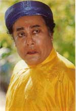
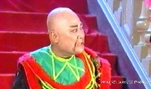

Khi ghe hát vô vàm sông Cà Mau thì trời gần tối, trong khoang ghe mọi người đã ăn cơm rồi, chỉ còn những người trên mui ghe vì bận đờn ca tài tử, hò hát nên chưa ăn. Ông Bầu Cang biểu bà “tẩm khậu” dọn lên mui ghe cho chúng tôi, ông Bầu cũng lên nhậu lai rai. Rượu vào lời ra, có người khen cô Kim đẹp người đẹp nết, giọng tốt hò hay, có kẻ khen ông Bầu có mắt tinh đời, biết người biết của. Trường Xuân nhậu cũng hơi nhiều, nói lè nhè:
– Bây giờ đang có chiến tranh Việt Pháp, nếu thấy người lạ tới, mình phải đề phòng. Rủi là lính kín phòng nhì tới dò xét, lỡ miệng nói bậy thì bị tù. Nếu bên Việt Minh tới gây cảm tình, móc ngoặc, Tây biết được thì mình cũng không yên. Tốt hơn hết là đừng giao thiệp với người lạ. Cẩn tắc vô ưu!

Ghe đã vô khỏi vàm một đỗi, trời tối đần. Chúng tôi định trở vô khoang ghe thì phía bờ sông bên mặt, một loạt súng nổ chát chúa. Phía bên trái cũng có tiếng nổ từng tràng dài, chúng tôi thấy lửa chớp chớp.
Trường Xuân la lớn:
– Bị Việt Minh phục kích rồi, anh em… nhảy xuống sông mau… nhảy.
Trường Xuân dứt lời phóng ầm xuống sông, bơi hướng vô bờ.
Hề Lòng, Tuấn Sĩ cũng phóng theo … Ngọc An nói như muốn mếu:
– Trời ơi… làm sao bây giờ? Tôi không biết lội…
Tôi nói:
– Bình tỉnh… mấy cô xuống ghe, núp ở một góc nào đó... Chờ coi… sao đã!
Mấy cô nhảy xuống ghe, bên trong nhiều anh em nhốn nháo, chạy tới chạy lui…
Phía trước, tàu kéo đứt đỏi, tháo chạy một mình thật mau, bỏ chiếc ghe chài trôi lình bình. Anh tài công lái chiếc ghe chài cũng nhảy xuống sông mất dạng. Ghe còn trớn kéo, bê ngang vô gần bờ. Trên bờ tiếng nổ càng dữ tợn, nhiều loạt… nhiều loạt… Dường như “mặt trận” kéo dài vô phía trong vì hai bờ kinh tiếng nổ như chuyền dài vô chợ. Mọi người nằm sát ván ghe. Ghe tấp vô gần sát bờ, tôi với anh Tám Cao nhảy xuống sông, kêu mấy anh dàn cảnh quăng đỏi ghe xuống rồi phụ với chúng tôi cột mũi ghe vô gốc bần.
Tiếng nổ vẫn còn, nhưng dường như tiếng nổ chuyển dần khỏi chỗ chúng tôi núp. Đào, kép được từ từ cho lên bờ, nằm phục dưới đất, dưới mương để tránh đạn và chờ coi tình hình ra sao. Ông Bầu, bà Bầu, mấy cô đào chấp tay vái Tổ nghiệp cho tai qua nạn khỏi. Tôi với Tám Cao bò tới chỗ ông Bầu, hỏi ông bây giờ tính sao? Ông run cầm cập, không nói được lời nào. Tiếng cô Ngọc An, giọng run run, răng đánh bò cạp:
– Em. em lạnh quá! Em sợ quá…
Tám Cao nói:
– Im..đừng la! Coi chừng tụi nó còn phục kích trên đó... Để anh ôm em, ” úm ” em một hồi là hết lạnh.
Tám Cao nói rồi, bò tới chỗ có tiếng của Ngọc An, bỗng tôi nghe một tiếng ” bịch ” thật lớn, Tám Cao ngã ngang, la:
– Ai da! Chết tôi!
Tôi hỏi:
– Anh Tám, trúng đạn hả?
Tiếng vợ Tám Cao, chị Lệ Thơ la bài hải:
– Đồ già dịch! Tình cảnh vầy mà còn dê được…. thiệt là quá mà…
Tôi kéo anh Tám Cao theo tôi:
– Chạy … Anh Tám. Ở đó chị Tám đạp anh mấy đạp nữa đa!
Chúng tôi lên tới bờ lộ. Bốn phía im phăng phắc. Tám Cao cười hì hì, phân trần:
– Tôi tính làm phước, ôm cô Ngọc An cho cô ta bớt sợ, ai dè bị con vợ tôi phục kích, nó đạp tôi đau quá mạng.
Tôi chỉ ánh đèn trong nhà dân:
– Anh Tám, có nhà còn thức, mình tới đó hỏi coi…
Chúng tôi tới ngôi nhà còn sáng đèn, chưa kịp lên tiếng, trong nhà đã có người bưng đèn ra, hỏi:
– Mấy chú là ai? Ở đâu tới đây? Sao mình mẩy, mặt mũi bùn đất không vậy?
– Dạ, chúng tôi ở dưới ghe hát, bị phục kích, hỏng biết là Tây hay Việt Minh, súng nổ quá trời nên phóng xuống sông lội vô… Bộ… êm rồi hả?
Tám cao tiếp lời:
– Hết nghe bắn rồi! Họ rút lui hết rồi sao?
Chủ nhà lộ vẻ kinh ngạc:
– Ai bắn? Ai rút? Súng nổ hồi nào? (chợt hiểu ra, ông ta cười ngả nghiêng). Tụi tui đốt pháo đón mừng ghe hát đó mà!
Tám Cao:
– Trời ơi, đốt pháo đón mừng ghe hát mà không cho biết trước… Báo hại tụi tui sợ gần chết…
Tôi nói:
– Đốt pháo, có tiếng nổ, bộ bà con không sợ Tây nghi có Việt Minh, nó đi ruồng bố sao?
– Quan ba, chủ quận Cà Mau cho lịnh đốt pháo. Lính bạt-ti-dăng gác ở đầu vàm, thấy ghe hát tới, đốt pháo báo hiệu vô chợ. Dân ở hai bờ sông thấy ghe hát về, họ mừng, sẵn dịp có phép của Quận nên họ cũng đốt pháo đó.
Chúng tôi xin mấy cây đuốc, đốt cho sáng, trở ra báo tin cho anh em yên lòng. Chủ nhà cũng rủ vài ba người trong xóm đốt đuốc theo chúng tôi.
Đi dọc bờ sông, chúng tôi lớn tiếng kêu, kiếm những anh đã phóng xuống sông. Hề Lòng, Tuấn Sĩ và anh tài công bám theo bánh lái ghe, ngâm mình dưới nước lâu, lạnh run.
Hề Lòng cằn nhằn, bị cá lòng tong rỉa, đau quá mạng mà không dám lội đi chỗ khác. Tuấn Sĩ không nói không rằng, leo vô ghe, kiếm rượu uống cho bớt lạnh.
Ông Bầu Cang biểu đốt mấy cái đèn măng-xông cho sáng rồi túa đi kiếm Trường Xuân. Kêu hồi lâu không thấy trả lời, vợ Trường Xuân gào khóc rất là thảm thiết. Bé Hoàng Vân, Ngọc An, Lệ Thơ tới an ủi, dìu vợ Trường Xuân vô nhà dân ở gần đó. Chúng tôi chia nhau đi dọc bờ sông. Bầu Cang mượn ghe để cho người chèo qua bờ bên kia kiếm. Bỗng có tiếng anh Sáu dàn cảnh la lớn:
– Thấy rồi …Thấy rồi… Cái chân của anh Trường Xuân đây nè …
Anh em xách đèn măng xông chạy tới chỗ anh Sáu dàn cảnh đứng.
Bầu Cang vừa đi vừa nói lải nhải:
– Cái gì kỳ vậy? Hỏng có mìn nổ, hỏng có bắn súng, mà sao đứt cái chân, văng tới đó?
Thì ra anh Trường Xuân núp trong bụi ô rô, ló cái chân ra.
Chun vô thì dễ, lúc chun ra mới khó. Anh không lên tiếng trả lời vì anh không muốn người ta thấy anh ở trong hoàn cảnh khó coi nầy. Bầu Cang biểu lấy dao, chặt bụi ô rô, kéo anh ra.

Trường Xuân trọc
Mình mẩy bị gai quào rướm máu, Trường Xuân thề không tới cái xứ Cà Mau hát nữa… nhưng thề là để cho đỡ tức, đỡ ngượng thôi, chớ anh ta cũng trở lại Cà Mau nhiều lần để hát. Vì có gì vui hơn là khi gặp được khách tri âm, người đồng điệu, hiểu được và chia xẻ với nghệ sĩ những nỗi niềm cảm xúc trong câu ca điệu hát. Dân Cà Mau ái mộ nghệ sĩ. Nghệ sĩ gánh Tiếng Chuông cũng nhớ suốt đời cái cách đón mừng gánh hát của dân Cà Mau trong thời đất nước còn chiến tranh.